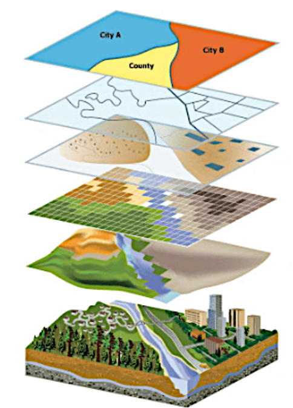
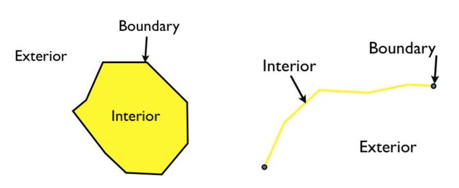
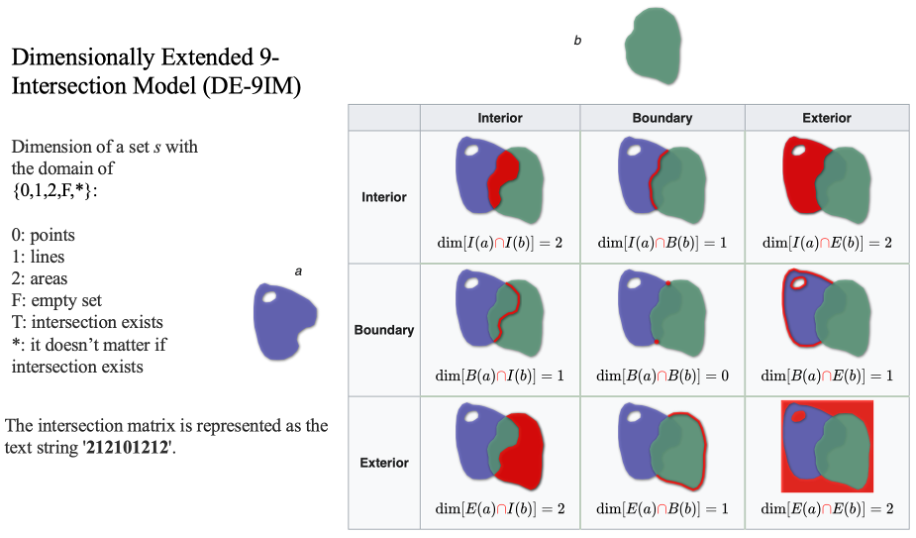
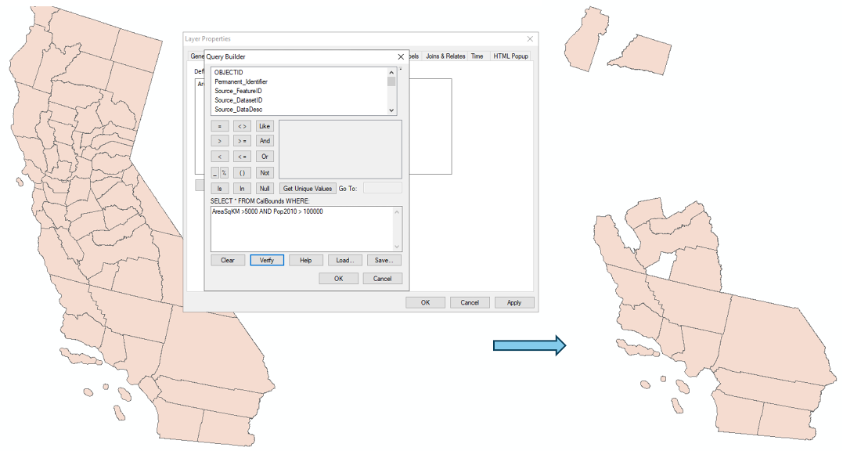
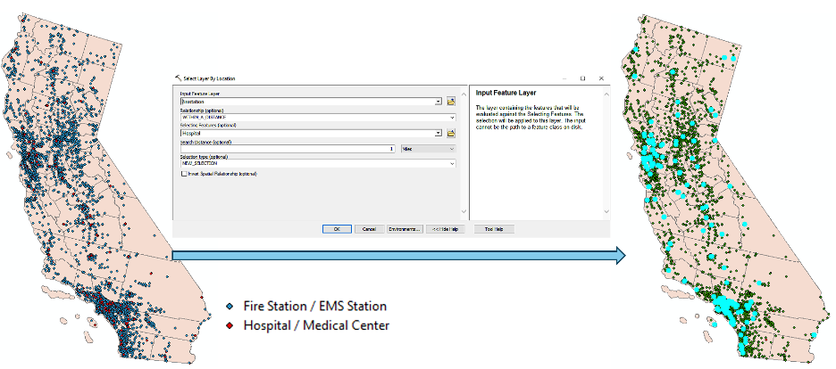
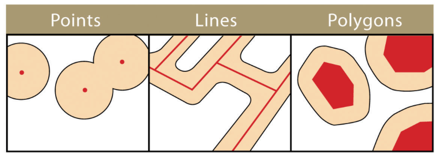
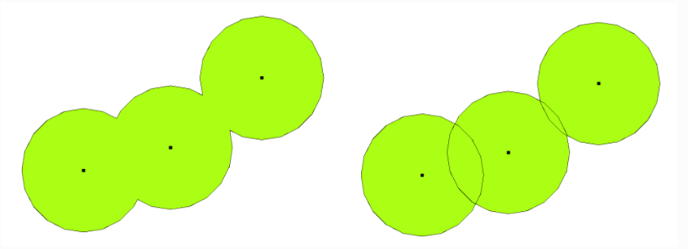
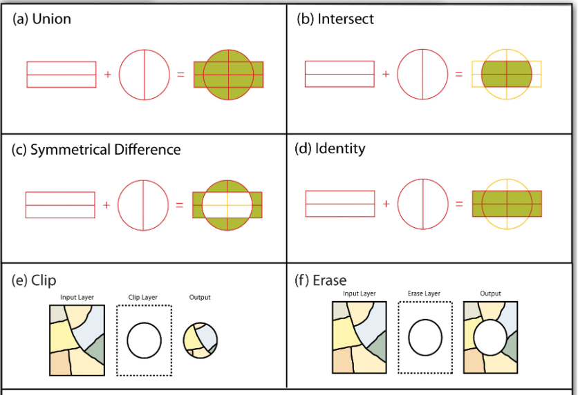
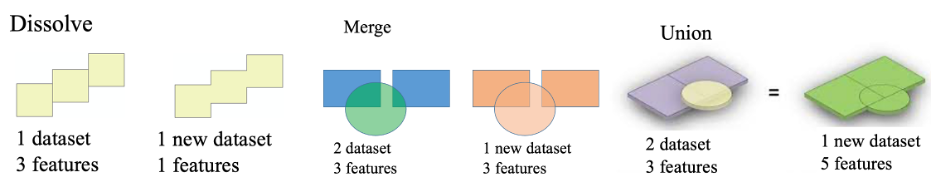

8 Spatial Analysis Basics: Vector
The strength of vector data lies in its ability to maintain precise boundaries and its capacity to handle topological relationships between spatial features. - Anonymous
Understand spatial relationship and how spatial relationship is implemented
Perform basic spatial queries
Conduct proximity analysis and vector overlay operations
Understand and apply spatial join
Spatial analysis combines information from many independent sources (layers) and derive new sets of information (results) by applying a sophisticated set of spatial operators Figure 8.1. Spatial analysis is often considered as the most intriguing and remarkable aspect of modern GIS. Relying on spatial relationship among features, spatial analysis methods applied to vector data allow researchers and practitioners to extract meaningful patterns from geographic features, playing a crucial role in urban planning, environmental modeling, transportation networks, epidemiology, and many other fields. This chapter explores the basic spatial analysis techniques applied to vector data, detailing how location information is used to derive insights into spatial patterns.

8.1 Spatial relationship
Spatial relationship describes how geographic features related to each other in space. There are several common spatial relationships, including the topological relationship (describes how features are connected regardless of their exact coordinates; see Chapter Vector data model), directional relationships (describe the relative direction of one feature to another), and distance relationships (describe how far features are from one another). Understanding spatial relationships is fundamental for many spatial analyses, including spatial queries, overlay operations and proximity analyses (discussed below).
One way to examine spatial relationships between features is using the Dimensionally Extended 9-Intersection Model (DE-9IM). In this model, it defines every spatial object (or feature) has an interior, a boundary, and an exterior Figure 8.2.

Depending on this definition, the spatial relationship between spatial objects can be derived by comparing the relationship between their interiors, boundaries, and exteriors. This systematic comparison produces an intersection matrix, commonly referred to as the Clementini Matrix, which can also be represented using a text string Figure 8.3. The matrix provides a precise way to describe spatial relationships such as overlap, containment, adjacency, or disjointedness, and it forms the basis for many topological analyses in GIS. Then, spatial query can be accomplished based on spatial relationship described by the DE-9IM pattern derived text string.

8.2 Attribute queries
Attribute queries utilize information saved in the attribute table associated with vector data layer, rather than the spatial location of each feature. Queries are built upon Structured Query Language (SQL) principles, because the attribute tables are essentially databases. Attribute queries allow select, filter or modify features based on their attributes Figure 8.4.

8.3 Spatial queries
Unlike attribute queries that work on attribute table, spatial queries utilize their location or spatial relationships between features or objects Figure 8.5. Note spatial queries can be combined with attribute queries (e.g., select all parks with area > 10 ha within 1 km of a river).

8.4 Proximity analysis
Proximity analysis explores what is near what. It is a form of spatial query in which geographic features within a specified distance of a particular feature are selected. One method used to conduct the proximity analysis is called Buffer, which defines a region that is less than or equal to a distance from a feature. It creates polygons around input features by a specified distance Figure 8.6. Buffer analysis can be applied to point, line and polygon layers.

Another function that is often used with buffer analysis is called Dissolve. Dissolve merges overlapping or adjacent buffers into a single region Figure 8.7. Note that, by definition, Dissolve is a vector operation that merges features based on shared attribute values or removes internal boundaries. Although it is often used with Buffer, it is not only associated with Buffer. Dissolve is fundamentally an attribute driven aggregation operation.

8.5 Vector overlay operations
Overlay operations superimpose multiple datasets (representing different themes) together to create new information by examining features overlap, combine, or differ Figure 8.8. Note that Clip, which cuts out feature in the input layer (or function Clip Raster works on raster data), works different from Intersect. Using Clip, the output layer from clip only has attribute from the input layer, while with intersect, attributes from both layers are inherited to the output layer.

Function Merge combines multiple input layers into one new single output without changing the features from the input datasets Figure 8.9. All features from the input datasets will remain intact in the output data, even the features overlap.

8.6 Spatial Join
Unlike the Join function (discussed in Chapter table and attribute operations) works on attribute tables, spatial join uses spatial relationships to join attributes of features from one layer to another layer. For example, you have a polygon layer of school districts and a second layer of points, representing the location of schools. By running a spatial join, you can transfer the fields in the point attribute table on school information into the school district polygon layer.
Similar to the join function, if multiple join features are found that fulfill the spatial relationship with a single target feature, instead of containing multiple copies of the same target feature, the attributes from the multiple join features will be aggregated using a field map merge rule (a summarized spatial join). For example, when multiple schools are found within a school district (which is often the case), the total number of students in the school district will be calculated by summing each school’s number of student.